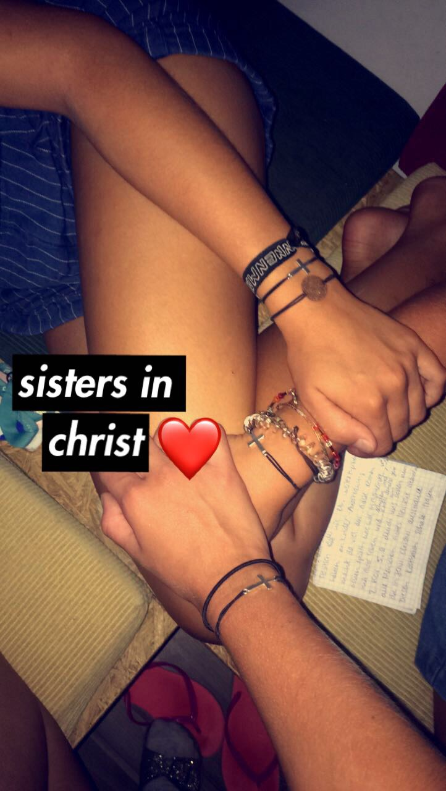
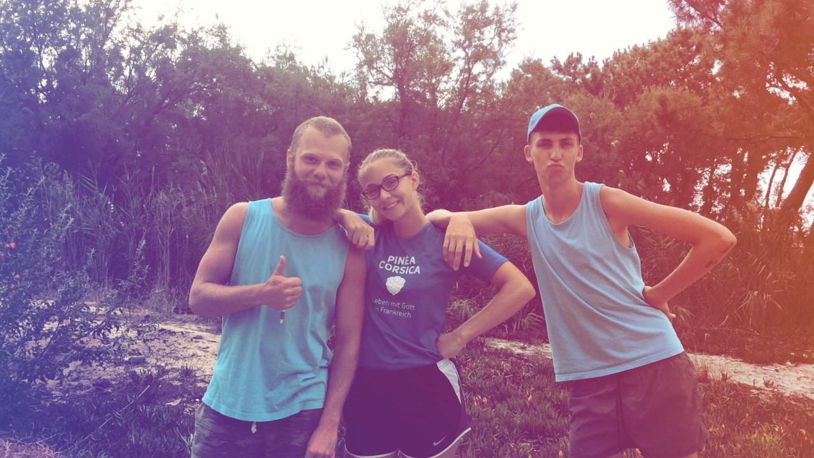
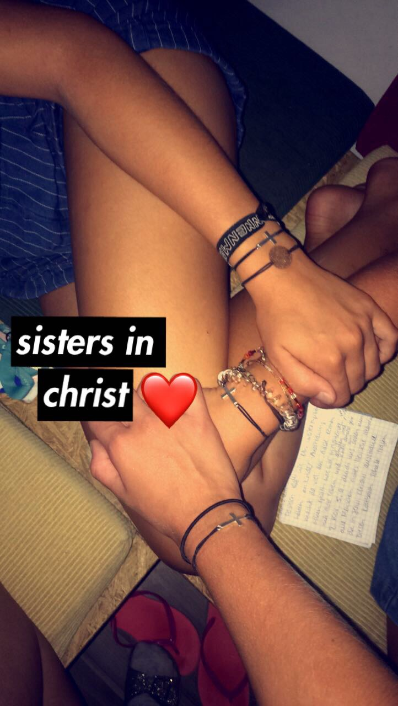
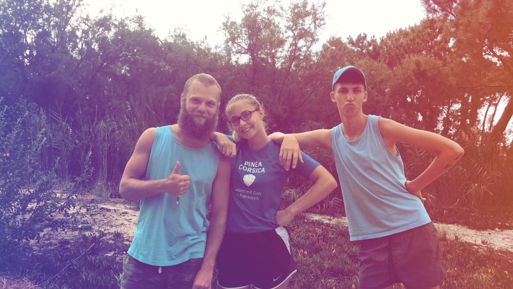

Hi! Willkommen auf meinem Blog über Pineá Korsika. Ich bin 21 jahre, überzeugte Christin und liebe die Korsische Insel.
Hier wirst du alles über meinen Aufenthalt auf der wunderschönen Insel erfahren.
Es ist eine zauberhafte Insel, auf der ich und jeder andere der dort hin kommt, an seine Grenzen stößt und sich persönlich weiterentwickelt.
Ich war in meinen Sommerferien dort Kinder- und Jugendleiter für die christliche Anlage Pineá und durfte eine wunderbare Zeit erleben..
Viel Spaß auf meinem Blog!
In den ersten 3 Wochen war ich für die 3-6 Jährigen zuständig.
Mit den kleinen Mäusen hat man hauptsächlich gesungen, gebastelt und spiele wie
"Schmetterling du kleines Ding" gespielt.
Nach ca. 2 Wochen hatte ich allerdings gemerkt, dass ich lieber mit älteren Kindern zusammen arbeite und fragte daraufhin ob ich
für meine restlichen 2 Wochen, die 10 bis 12 Jährigen betreuen könnte.
Gefragt-Getan. Meine letzten Wochen durfte ich dann mit den 10-12ern verbringen, was ein unglaublicher Segen war.
Es hat super viel Spaß gemacht mit den Kindern zu spielen, Kinderdisco's zu veranstalten, mit ihnen zu Worshippen und Bibelgeschichten nahezubringen.
>8:30 - Mitarbeiterandacht
9:00 Vorbereitung des Kinderraumes
>10:00 Kinderlied
>10:15 Lobpreis mit den Kindern von 3 bis 12
>10:30 Andacht für die Kinder in den verschiedenen Gruppenräumen
>10:45-11:00 Lieder, Spiele, Basteln
>11:30-12:30 Attackezeit (alle Aufgaben die erledigt werden müssen)
>12:30-14:30 Mittagspause (außer man hat Wäsche oder Spülen)
>14:30-15:30 Kinderprogramm wie bsp. Spiele am Strand
>15:30-20:30 Mittagspause und Aufgaben die auf deinem Dienstplan stehen
>20:30-21:30 Kinderprogramm
>21:30 Feierabend oder je nach Dienst eingeteilt bei Crepê oder Restaurant
>22:30 Meistens mit den anderen im Kinderraum oder am Strand
>Open End
Da es einfach bisher die schönste Zeit war die ich erleben durfte, gibt es nicht nur ein einziges Highlight
Unglaublich wertvoll sind natürlich die Begegnungen mit den Kindern, man lernt sie in vielen Situationen kennen und geht mit ihnen durh Höhen und Tiefen.
Vorallem die Freunschaften die man auf Korsika schließt sind so reich gesegnet und unglaublich tiefsinnig. Danke Jesus.
Das beste aber ist die Beziehung zu Gott, die von Tag zu Tag auf der Zauberinsel wächst und stärker wird. Diesen Seelenfrieden den ich hatte, kann ich mit einem Kinderlied beschreiben:
"Du gibst mir Freude Freude Freude in meim' Leben".

 


